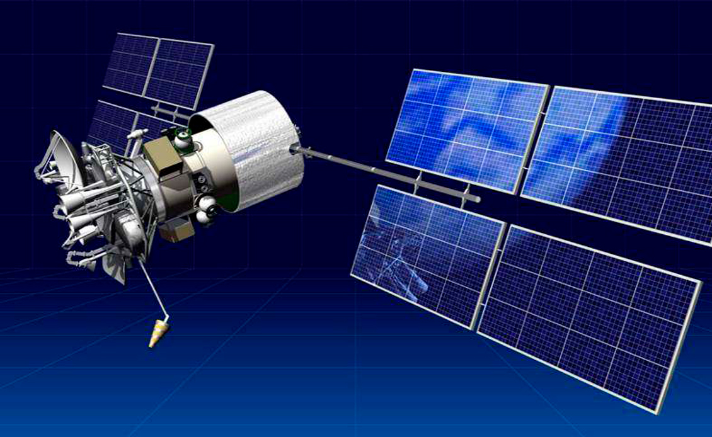

Technology
- Our 3-steps Roadmap
- Functional approach
- System architecture
- Autonomous Navigation System
- Optical Surveillance and Analysis System
- Coordinated Motion Control System
- Remote Engine and Technical Monitoring
- Remote Control Station
- Hardware and Conjunctions
- Communication and Cybersecurity
- Bridge Advisor
- Convoy navigation
- Legislation
Communication and Cybersecurity
All a-Nav elements are combined into one local network, including a VPN tunnel between onboard systems and the Remote Control Station (RCS). This local network is protected from unauthorised access using data encryption, a firewall to protect the perimeter, and controls and restricts sockets.
Any data exchange between the onboard LAN segment and the remote systems is carried out by wireless communication channels. Depending on the MASS (maritime autonomous surface ships) operation conditions, communication facilities may include:
- satellite communications (in any waters): VSAT, Inmarsat, Iridium, etc .;
- mobile communications (within the coverage area of mobile networks): GPRS, CDMA, 3G, 4G LTE;
- direct radio link (in the line of sight, for example, during Convoy Navigation).
Communication channels are reserved to provide permanent availability.
Communication channels between onboard systems and the RCS is protected from unauthorised access which may compromise data or be granted unauthorised access by the use of data encryption tools and a virtual private network (VPN) on top of the internet. This provides a secure connection between the node on the ship and the RCS node (following ISO/IEC 27005:2018 and the IACS Rec. No. 166 Recommendation on Cyber Resilience). Cyber security of the coastal remote control is provided according to the standards of the shipping company’s information security (BS 7799-1: 2005, ISO / IEC 17799: 2005, ISO / IEC 27001 and ISO / IEC 27002 are recommended).
The security of the connection to the information network (including from the developer's side to identify and eliminate possible defects) is provided in the following ways:
- VPN tunnel using L2TP + IPsec with AES-256 encryption;
- Restricting access by external IP from the list of allowed connections;
- Restriction of connection from the Internet, direct connection from the Internet is not possible, incoming ports are closed;
- Connecting the developer and third applications to the RCS only, and not directly to the systems on board (thereby also reducing the load on the communication channel to the ship);
- Using a single point of connection, which is a router: the connection is made through a tunnel built using OpenVpn technology using certificates (for each counterparty, a unique password-protected certificate is used) and a login / password pair for each employee, encryption is performed using the AES algorithm.
- Using its own unique addressing on each ship / RCS, not overlapping with each other (separation of networks).
Access to software is restricted through a secure LAN. The reliability of the software is ensured by compliance to IS regulations, including checking the relevance of the installed software versions and releases through Configuration Manager, with the availability of backup copies for its restoration. Any software changes to control will be performed in accordance with ISO / IEC 17799: 2005. LAN protection is provided in the following ways:
- Inside the local network, Internet access is disabled on all devices, blocked at the router level;
- Windows and Linux operating systems have user accounts created and assigned a password;
- Firewalls are enabled in the Windows and Linux operating systems such that, all traffic is blocked for entry and / exit except for service and installed software. The Builtbuilt-in antivirus is activated;
- Any in-network devices will involve a web interface with the manufacturer's standard passwords changed;
- Any agents of the monitoring system will need to connect with an account that is granted a minimum of necessary rights to the server;
- Unused USB ports on servers are disabled in bios;
- Unused ethernet ports are disabled;
- Unique passwords for BIOS are created;
- The rules for temporary blocking of access when entering an incorrect password are activated on the network attached storage (NAS) and a whitelist of IP addresses for devices with access is configured;
- A whitelist of IP addresses is configured for the cameras onboard with an account created that is granted the minimum required set of rights to connect to the network storage. Any unused network monitoring services are disabled and access via SSH is disabled.
As a part of a-Nav systems we have developed Configuration Manager for system configuration, monitoring, maintenance and troubleshooting. Together with ANS and OSA self-diagnostic tools, it provides double control in cases such as any failure of communication systems or RCS during use by remote control. In such a case, the Autonomous Navigation System (ANS) immediately identifies the situation and switches to automatic control by signaling to the Bridge Advisor (BA) onboard. Potential cybersecurity vulnerabilities are also factored into the application’s logic.